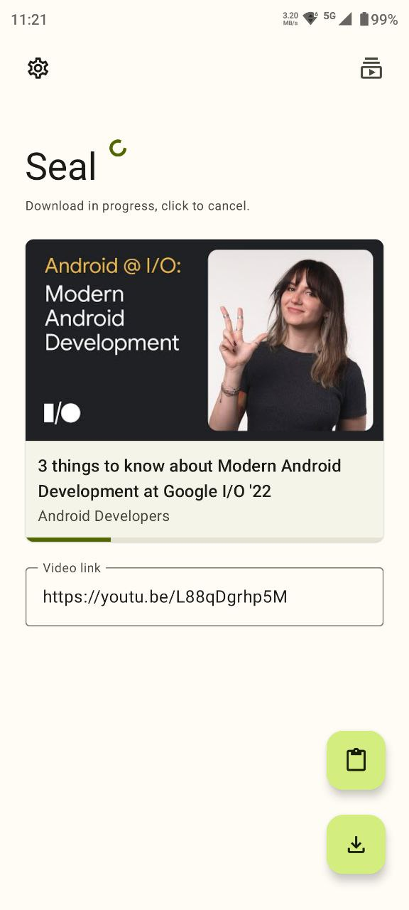
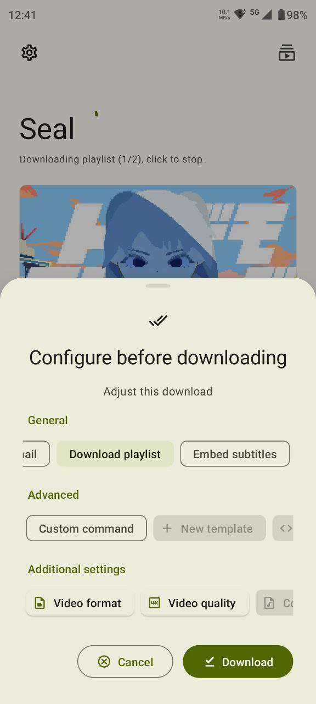

Seal 全能力盘点：从一条链接到完整视频库的完整链路
Seal 不只是 yt-dlp 的图形壳——它把跨平台视频下载、字幕管理、历史记录重下这三件事，用极简的一条链接入口串成了一条完整流水线。
开头：为什么值得盘点 Seal
市面上视频下载工具不少，但 Seal官网 走的路线有点特别——它没有做任何花哨的功能堆砌，而是把所有注意力集中在一条链路上：你给它一条视频分享链接，它帮你搞定后面所有事。这背后是 yt-dlp 内核的强大支撑，但 Seal 的价值远不止"把 yt-dlp 做成图形界面"那么简单。
它解决的不是"怎么下载一个视频"这么窄的问题，而是"怎么把分散在各大平台的视频内容，高效、可管理、带字幕地收进自己的本地库"这个完整需求。这个定位让 Seal 从一堆下载工具里站了出来，也让它的能力版图值得认真盘一遍。
极简入口：一条链接就够了
装好 Seal 之后——从官方下载拿一份安装包就行——它的核心设计哲学在第一步就体现得淋漓尽致。你不需要给它网站账号，不需要输入关键词搜索，不需要知道视频 ID——只要从任何一个视频客户端或浏览器里点"分享→复制链接"，粘进 Seal 就行。yt-dlp 内核对这个输入的解析能力，是整条链路的根基。
跨平台覆盖：主流平台一把梭
Seal 目前覆盖的平台列表相当完整：YouTube、哔哩哔哩、Instagram、Twitter/X、Facebook、Twitch、Vimeo，基本囊括了海外主流视频站和国内最大的弹幕社区。每个平台的链接获取路径也都做了对应适配——比如 YouTube 是播放页→分享→复制链接，Instagram 是帖子右上角三点菜单里找，Twitter/X 则是从推文里带视频的分享入口拿到推文链接。这个适配意味着你不用去每个平台单独找"怎么分享"，照 Seal 指引来就行。
亮点在于，Seal 会在格式选择页面自动列出该平台该视频可用的所有清晰度、编码、音频轨，你直接勾选想要的组合。这背后是 yt-dlp 每次请求时动态探测的结果，不是写死的列表。
链接类型智能识别
不同类型的链接进入 Seal 后走的路线也不一样：单视频链接解析最快，通常几秒内就返回格式列表；播放列表链接会先数清楚列表里有多少条，然后自动进入批量模式；频道和用户主页链接覆盖度最低，有些平台需要额外配置 Cookie 才能完整解析，配置方法在seal文档里有详细说明。这个智能分流让你不用手动切换"单视频下载"还是"批量下载"，Seal 自己判断。

格式与字幕：双轨输出的深度管理
下载只是第一步，Seal 在格式选择和字幕处理上的能力，才是它和同类工具拉开差距的地方。很多人用视频下载工具只追求"能下到"，但 Seal 已经考虑到了"下到之后怎么用"。
字幕的三种处理方式
Seal 对字幕的支持覆盖了三种常见场景：内嵌进视频文件、单独下载成独立文件（.srt 或 .vtt）、自动翻译字幕抓取。这三种方式可以自由组合——你可以同时选内嵌字幕和独立字幕文件，也可以只抓自动翻译字幕用来练听力。
v1.10.0 是字幕功能的一次重要升级。从这个版本开始，Seal 增加了按语言名称或代码搜索字幕的功能，比如搜"中文"或"zh-Hans"能快速定位；自动翻译字幕也正式出现在了字幕选择列表里，用不同图标区分手动字幕和机器翻译字幕；还多了一个字幕嵌入的开关，想内嵌就开，不想就单独存文件。v1.12.0 又补了两项实用增强——记住上次的字幕选择，下次下载同站点同语言视频时自动勾选；不管有没有选字幕，合并后的视频都会重封装成 MKV 格式，兼容性更好。
字幕格式自动转换
从视频站拿回来的字幕轨不一定是你播放器认的格式——比如 YouTube 默认给 .vtt，但某些老播放器只认 .srt。Seal 在下载完成后会用 ffmpeg 自动做这个格式转换，你不用手动跑命令。这个细节省了很多后续处理的麻烦。
内嵌字幕的实际边界
内嵌字幕不是万能的。电脑端 VLC 和 MPC-HC 能正常显示字幕轨切换，手机端播放器要看对 MKV 内嵌字幕的支持程度，但上传到流媒体平台时字幕轨大概率会被剥离。如果你的字幕需要后续编辑或专业微调，建议保留独立字幕文件而不是强行内嵌。

历史记录的"活"管理：文件没了但记录还在
很多下载工具的历史记录是个死列表——下载完就躺那儿，删了文件就再也找不回来了。Seal 在 v1.12.0 给历史记录加了一个"活"的能力：一键对标记为不可用的视频重新发起下载。
什么时候会"不可用"
Seal 的下载记录会自动标记三种不可用状态：视频站下架了内容（版权、违规、作者删除）、你手动删了物理文件、存储介质挂载异常导致路径找不到。v1.12.0 之前遇到这些情况只能手动再复制粘贴一次链接，现在点一下"重新下载"就行——Seal 从历史记录里读出原始链接，重新发起 yt-dlp 解析，你不用再去找一遍那条链接。
换机迁移的完整闭环
这个能力配合 Seal 的完整备份功能，形成了换机迁移的标准流程：旧手机导出历史记录 JSON，新手机导入，导入后所有记录自动标记为不可用（因为新手机上还没有物理文件），然后逐个点击重新下载就行。这对于重度使用 Seal 积累了大量收藏的用户来说，是刚需级的功能。
短板：客观说局限性
盘点完优势也得说边界。Seal 不是万能的，有些情况它确实搞不定：视频站永久下架的内容，重新下载大概率解析失败，这不是 Seal 的问题，是源没了；频道和主页链接的支持度因平台而异，有些需要手动导入 Cookie 才能完整解析；自动翻译字幕的质量完全取决于视频站本身的机器翻译水平，Seal 不做二次优化；部分平台的大会员内容需要额外配置 Cookie，而且 Cookie 过期后要重新导入。
另外，Seal 不做"视频剪辑""格式转换""去水印"这类增值功能，它的定位就是下载+字幕管理，不碰后半段。这既是专注也是取舍——如果你需要剪辑，Seal 配合剪辑软件用就行。
什么样的人该用 Seal
盘下来后可以看出，Seal 的能力不是给所有人量身定做的，但对以下几类人群来说，它刚好踩在了痛点上。
第一类是跨平台视频收藏爱好者。YouTube 想存教程、哔哩哔哩想存大会员内容、Instagram 想存 Reels，Seal 一个工具搞定所有平台的分享链接入口和格式选择，不用在每个平台单独找下载方案。字幕管理又让收藏的视频在跨设备观看时不丢字幕轨。
第二类是字幕刚需用户。学外语的人需要自动翻译字幕练听力、做字幕校对的人需要独立 .srt 文件手动微调、跨地区观看内容的人需要内嵌字幕保证任何设备都能显示——Seal 三种字幕处理方式覆盖了这些场景。
第三类是换机频繁的重度用户。积累了几百上千条视频收藏的用户，换机时最怕的就是"我以前收藏了什么来着"。Seal 的历史记录备份+离线重下功能，让换机变成了"导出→导入→逐个重下"的标准化操作，不会丢东西也不会漏东西。
Seal 这套能力背后是个人开发者 JunkFood02 的持续维护，版本更新节奏稳定，社区也有完整的 Telegram 公告频道和 Matrix 讨论空间。翻译工作走 Hosted Weblate 协作，目前已经覆盖了 15 种以上语言。开源社区也同步维护着 Seal 的完整文档和源代码：GitHub 上是主仓库，Gitee 和 GitCode 有对应的国内镜像方便大陆用户访问，三个仓库内容保持同步更新。